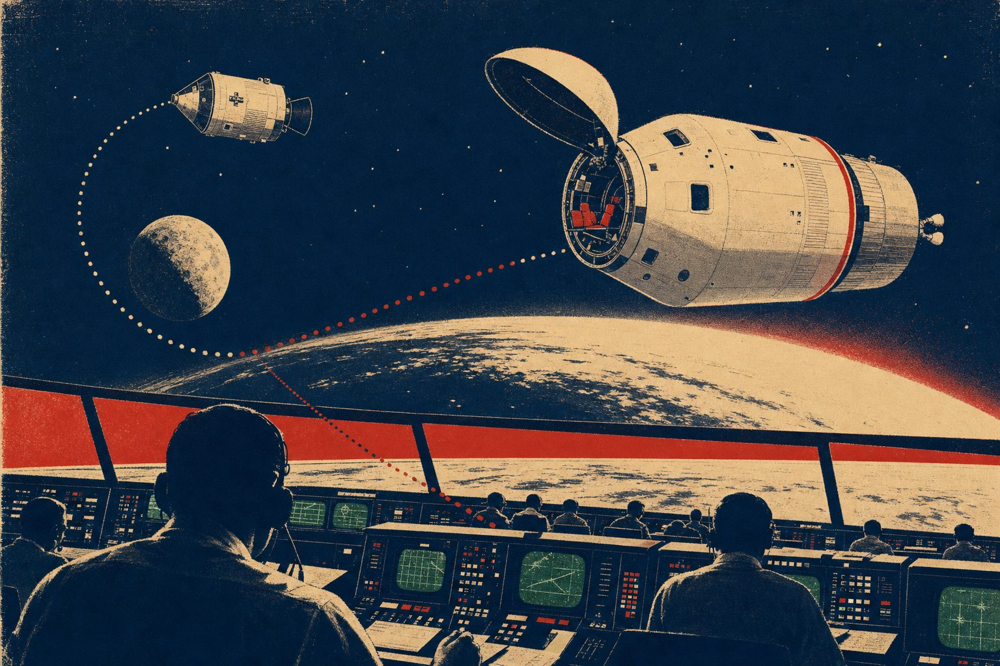

Future Space Engineers Need a 10 out of 10
Would today's SpaceX and NASA flight controllers ace this game? They'd better — and why that's true is the whole point.

The ten decisions you just made aren't history trivia. Every one of them runs on a principle that is still core doctrine in human spaceflight today — at NASA, at SpaceX, at every program that puts people on top of rockets. A professional flight controller wouldn't score 10/10 because they memorized Apollo 13. They'd score 10/10 because they would re-derive every answer from first principles. The physics of keeping humans alive in space hasn't changed.
1 · Get to a safe trajectory first
The free-return decision: before anything else, put the ship on a path that gets home even if everything else fails. Crewed spacecraft are still designed around that exact question — SpaceX's Dragon capsule carries an escape system that can pull the crew away at every phase of flight, from the launch pad to orbit. Every moment of a mission has a "what's my ride home?" answer before it's allowed to happen.
2 · Conserve consumables early and aggressively
The power shutdown and water rationing calls. Flight controllers call this managing margins: the moment a resource looks tight, you cut consumption hard — because margin you save early is the only margin you'll have late. It's drilled in contingency simulations to this day.
3 · Use what's on board in unintended ways
The CO₂ mailbox and the LM-to-CM battery jump-start. Improvisation under constraint is the skill mission control trains for. NASA and its partners run integrated simulations where the training team deliberately breaks things, precisely to force this kind of inventing-with-what-you-have. The mailbox is the most famous exam answer in spaceflight history.
4 · Protect the reentry vehicle above all
The Service Module jettison timing and the careful Command Module power-up. The reentry capsule — the only thing that can survive the trip through the atmosphere — is sacred in every crewed program, then and now. You spend anything else to protect it.
⏱️ Here's the part that should give you chills
Scoring 10/10 today — with hints, and no time pressure — is the easy version. The real Apollo 13 team had to get 10/10 the first time, in real time, with three lives on the line and no answer key. They did it by working in teams, checking each other's math, and testing every procedure in simulators before radioing it up.
That's the actual skill this game is pointing at. A scout who scores 10/10 made the same calls Gene Kranz's flight controllers made. And a scout who scores 6 and argues about the answers? That's flight-controller behavior too — it's why every decision page has a "Sources for Skeptics" box. Disputing the answer politely, with evidence, is exactly how mission control works.
So if you want to fly, build, or run missions someday: the entrance exam has been the same for 55 years. Go get your 10.
Already flew? Fly again and go for Mission Commander.
📚 Sources for Skeptics
"Still core doctrine"? Don't take our word for it:
- Apollo 13 Flight Journal — the original ten decisions, hour by hour, in the crew's and controllers' own words
- NASA Commercial Crew Program — how today's crewed capsules (SpaceX Dragon, Boeing Starliner) are designed, tested, and simulated with NASA — including launch-escape capability through every phase of flight
- Apollo 13 in Real Time — listen to mission control derive the answers under pressure, first time, no answer key
The four principles above are our reading of the record — check it, argue with it, and bring evidence. That's the job.